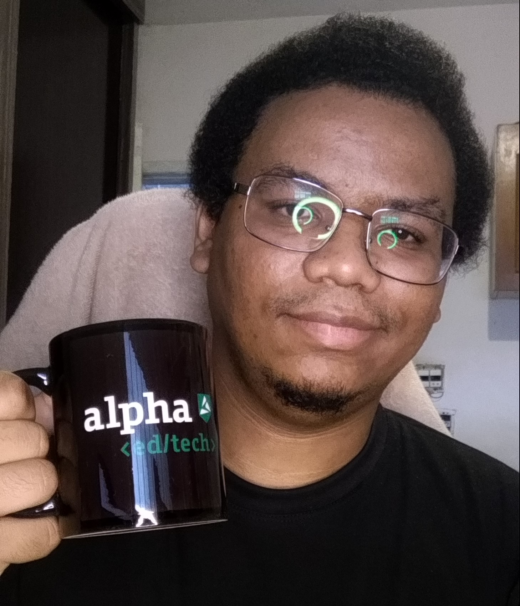

Dados pessoais

plinio figueiredo dos santos
Aspirante a desenvolvedor Full Stack na Alpha Edtech
Endereço: Rua Serra do Caxambú, 89
CEP: 08295-170 - Vila Carmosina - São Paulo - SP
Celular: (11) 94016-8110
E-mail: plinio.figueiredo.s@gmail.com
Portfólio: https://castelo-arcano.itch.io
Idade: 26 Anos - Brasileiro